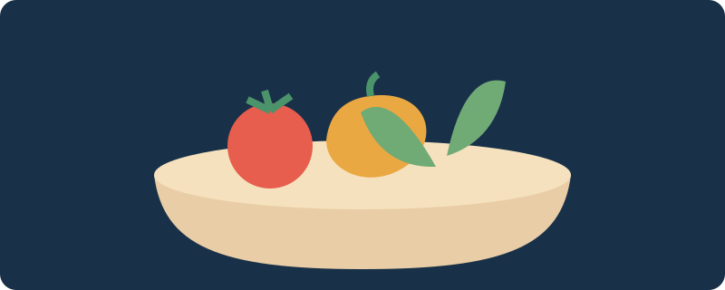

Garden-to-Table Recipes
Simple ways to use vegetables and herbs while the harvest is fresh.

Three flexible ideas
Tomato, cucumber and herb salad
Wash and cut tomatoes and cucumber; toss with fresh herbs, olive oil and a little vinegar or lemon. Season to taste and serve promptly.
Roasted garden vegetables
Cut washed zucchini, peppers and onions into similar-size pieces. Toss lightly with oil and roast on a sheet pan until tender and browned, turning as needed. Add herbs after cooking.
Fresh pepper and bean bowl
Combine cooked beans, chopped peppers, corn and herbs; add lime juice and a little oil. Use mild peppers or add hot peppers gradually to suit your taste. Refrigerate promptly and serve chilled.
Handle the harvest safely
Wash produce under running water before cutting; use clean equipment and separate raw meat from ready-to-eat food. Refrigerate perishable dishes promptly. Wear gloves when preparing hot peppers and avoid touching your eyes.
These are fresh dishes, not shelf-stable canning recipes. For preserving, use a tested recipe and the specified method; do not can these recipes as written.
More inspiration
- USDA garden-to-table recipes
- CDC: preventing food poisoning
- National Center for Home Food Preservation
Explore My Garden, Hot Peppers and Home Canning.